← Overall ranking · Lab gallery
F05 · Requests Work Hub — version ranking
Family task: Requests work hub (/requests): see all service requests and active projects, understand counts/status, filter/search/sort the captured 12 requests + project, open an item, start a new request. Pagination must not invent rows 13-26.
Baseline context: Frozen per DECISIONS SS2: header line, KPI strip (Total 26 captured as 12-verified-rows phrasing/Under review/Quoted/Projects), tabs All/Requests (12)/Projects, 12 captured request rows + Razorpay project row, 9-value status filter, search placeholder, 'Showing 1-12 of 26 - 1/3'. UI-only status labels documented, not defects.
Leading version(s): V3 · Confidence: medium — Complete screenshot set + interaction/axe/keyboard runs in one pinned environment; single evaluator; designed empty/loading/error states generally have no public trigger and were not observed unless a version's task notes say so; system-font fallback instead of Outfit.
Tie groups: none (all gaps > 2.0) · Production comparison: Comparison place #3 of 6 at 71.2. Lab-only winner remains V3. Practical tie-break used inside a 2.0-point group.
Lab-only scores
| Rank | Version | Total /100 | Task clarity (w25) | Usability (w20) | Visual craft (w15) | Responsive (w15) | Accessibility (w15) | Integrity (w10) | Major+ issues |
|---|---|---|---|---|---|---|---|---|---|
| #1 | V3 · Attention Queue | 75.0 | 4 /4 | 3 /4 | 3 /4 | 3 /4 | 2 /4 | 2 /4 | 2 |
| #2 | V2 · Ops Console | 71.2 | 3 /4 | 3 /4 | 3 /4 | 3 /4 | 2 /4 | 3 /4 | 0 |
| #3 | V1 · Calm Ledger | 67.5 | 3 /4 | 3 /4 | 3 /4 | 2 /4 | 2 /4 | 3 /4 | 2 |
| #4 | V5 · Status Lanes | 58.8 | 3 /4 | 2 /4 | 2 /4 | 2 /4 | 2 /4 | 3 /4 | 1 |
| #5 | V4 · Chapter Tabs | 50.0 | 2 /4 | 2 /4 | 2 /4 | 2 /4 | 2 /4 | 2 /4 | 0 |
Formula: total = Σ(weight × score ÷ 4). Dimension scores are integers 0–4 against fixed anchors (25 task clarity · 20 usability · 15 visual craft · 15 responsive · 15 accessibility · 10 integrity). Totals within 2.0 form a practical group; ties are ordered by task clarity, fewer major/critical issues, then responsive score; exact ties after these checks share rank (=).
Production page report and comparison rank
Comparison place #3 of 6 at 71.2. Lab-only winner remains V3. Practical tie-break used inside a 2.0-point group.
Live production reference. Same rubric, separate from lab version records. Not a lab template and not an automatic winner. Route: /requests. Outcome: reviewed. Confidence: medium.
| Comparison place | Page | Total /100 | Task clarity | Usability | Visual craft | Responsive | Accessibility | Integrity | Major+ issues |
|---|---|---|---|---|---|---|---|---|---|
| #3 | Production · /requests | 71.2 | 3 /4 | 3 /4 | 3 /4 | 3 /4 | 2 /4 | 3 /4 | 1 |
Heading Work Hub. Tabs included All, Requests, and Projects. A status select, a text input, and previous/next page controls were visible. A request detail link pattern existed, but a detail page was not opened.
Order if production is included
- V3 — 75.0 · comparison #1
- V2 — 71.2 · comparison #2 · inside a 2.0-point group
- Production — 71.2 · comparison #3 · inside a 2.0-point group
- V1 — 67.5 · comparison #4
- V5 — 58.8 · comparison #5
- V4 — 50.0 · comparison #6
Lab-only ranks in the table above are unchanged. Inside a 2.0-point group, task clarity, fewer major issues, then responsive score decide the comparison place.
Observed issues
- Shared shell contrast finding.
Not observed
- Sort was not confirmed.
- A request detail page was not opened.
Desktop document overflow was 0 on reviewed routes. An earlier mobile pass of accounts A and B also had no document overflow and a menu control; opening that menu was not proven. Dark mode was not activated. axe-core reported four serious color-contrast nodes on the shared shell. No production screenshot was stored. None stored. Production pages can contain account data.
Shared shell / family-wide findings
- Lab state-toggle chips (Loaded/Empty/Skeleton/502) are visible inside the client UI in this family - useful demo conveyance of designed states, counted once as shared meta-UI, not per-version.
- All 5 preserve the frozen KPI/tabs/rows; none horizontally scrolls at any tested width (a family strength).
- Shared 4.33:1 brand contrast on small secondary text (axe x2-x6).
Per-version evidence
#3 · V1 · Calm Ledger — 67.5
Source (unmodified): client-portal-lab/families/F05-requests-work-hub/V1/index.html
· Raw evidence: review-evidence/raw/F05-V1-raw.json
Task clarity (3/4): Work Hub headline, 4 KPI cards and All/Requests(12)/Projects tabs make scope clear; rows follow in a calm ledger. No verdict about what needs attention first.
Usability (3/4): Status filter works (Draft -> 'Showing 1-1 of 1 verified work items' live region); search/sort selects present and labelled. Detail drawer (signature) not separately exercised.
Visual craft (3/4): Airy ledger rows, coherent badges; state-toggle chips (Loaded/Empty/Skeleton/502) are lab harness controls sitting in the client UI (family-shared).
Responsive (2/4): No horizontal scroll, but on mobile the four tall KPI cards consume the whole first screen - no work item is visible without scrolling - and shell menu/collapse buttons measure 2px wide.
Accessibility (2/4): Axe target-size x12 plus contrast x2; mobile row links are 19px high and two shell buttons are 2px wide. Focus 12/12 otherwise.
Integrity (3/4): Frozen rows/counts preserved with honest captured-data phrasing ('12 verified rows on this page - 3 pages in the captured list'), consistent with the pagination anti-invention rule.
Interaction / task results (V1)
| Task | Result |
|---|---|
| T1_first_screen | H1='Work Hub'; see desktop/mobile top screenshots |
| T2_keyboard | 12/12 stops focus-styled, 12/12 in viewport |
| T3_core_desktop | pass via select "Draft" |
| T3_core_mobile | pass via select "Draft" |
| T4_theme | toggle: pass (dark false->true); dark capture applied=True |
| T5_demo_honesty | honest feedback shown: Showing 1–12 of 12 verified work items AUDIT-P23-20261005-6rdsf Request to Quote Builder Request Web Developme |
| T6_mobile | h-scroll mobile=0; nav probe opened=True btnW=2; tap<24px=8 |
| T7_axe | desktop: color-contrast x2, target-size x12; dark: color-contrast x3, target-size x12 |
Issues (5)
- minor
F05-V1-I1axe desktop: color-contrast x2 (a[aria-current="page"] > span, i) Fix any of the following: Element has insufficient color contrast of 4.33 (foreground color: #465fff, background color: (axe-core 4.10.2 desktop) - major
F05-V1-I2axe desktop: target-size x12 (li[data-status="Expired Quote"][data-date="2026-10-06"][data-type="Request"]:nth-child(2) > .row-title, li[data-status="Submitted"][data-date="2026-10-06"][data-type="Request"]:nth-child(3) > .row-title) Fix any of the following: Target has insufficient size (466px by 18.9px, should be at least 24px by 24px) Target has in (axe-core 4.10.2 desktop) - minor
F05-V1-I3axe dark: color-contrast x3 (a[aria-current="page"] > span, i) Fix any of the following: Element has insufficient color contrast of 3.94 (foreground color: #5b7bff, background color: (axe-core 4.10.2 dark) - major
F05-V1-I4axe dark: target-size x12 (li[data-status="Expired Quote"][data-date="2026-10-06"][data-type="Request"]:nth-child(2) > .row-title, li[data-status="Submitted"][data-date="2026-10-06"][data-type="Request"]:nth-child(3) > .row-title) Fix any of the following: Target has insufficient size (466px by 18.9px, should be at least 24px by 24px) Target has in (axe-core 4.10.2 dark) - minor
F05-V1-I58 mobile tap targets under 24px, e.g. [{'text': 'Open navigation menu', 'w': 2, 'h': 36}, {'text': 'Collapse sidebar', 'w': 2, 'h': 36}, {'text': 'AUDIT-P23-LINE-20261005-7r0l Reques', 'w': 313, 'h': 19}] (raw tapTargetsMobile)

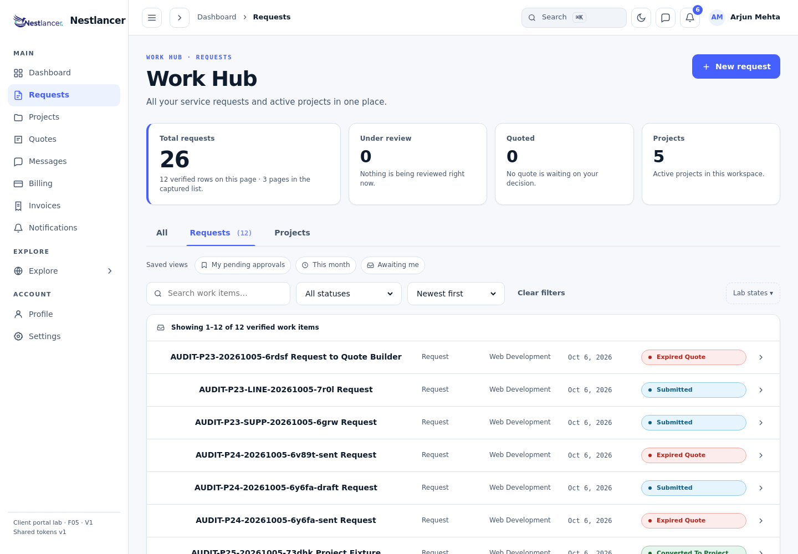

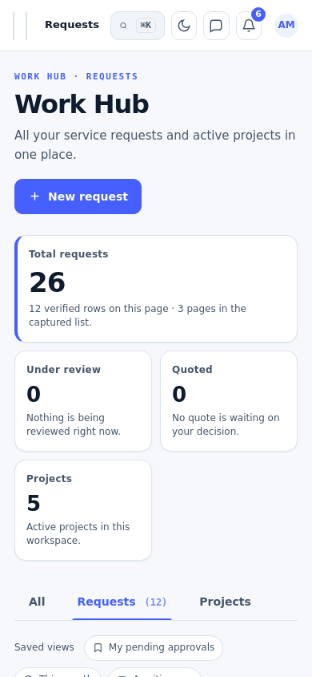

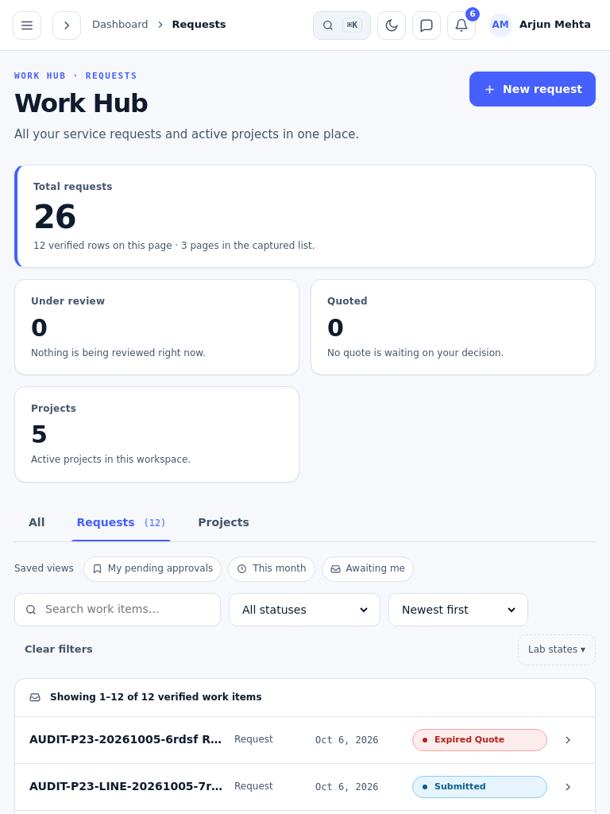

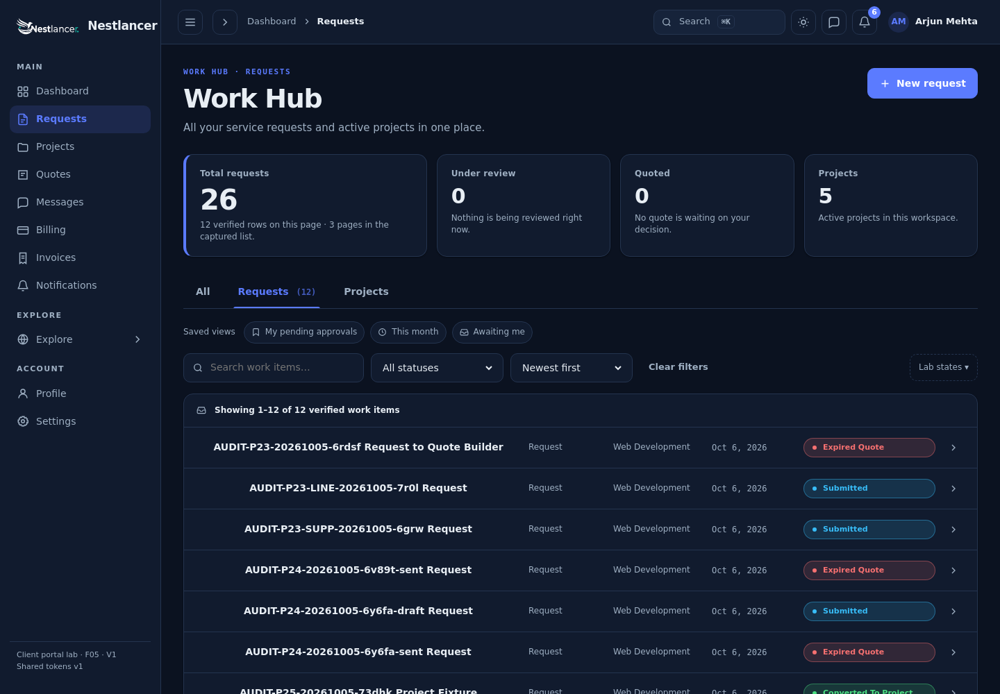

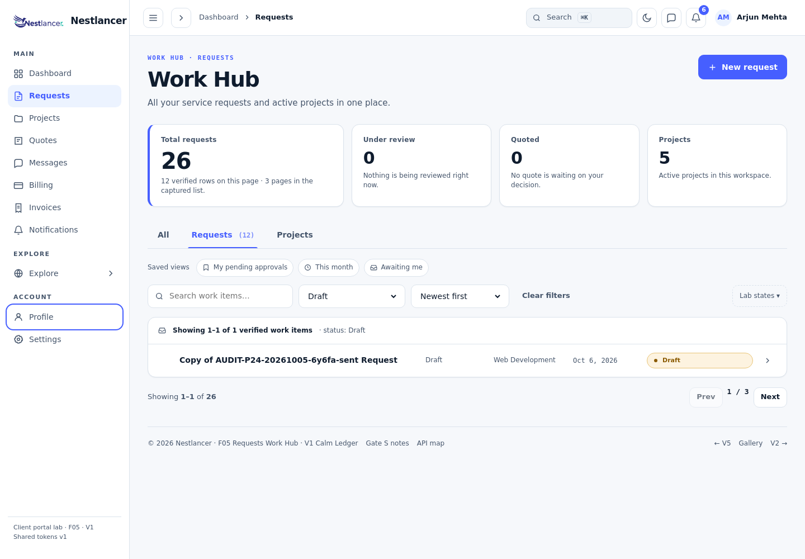


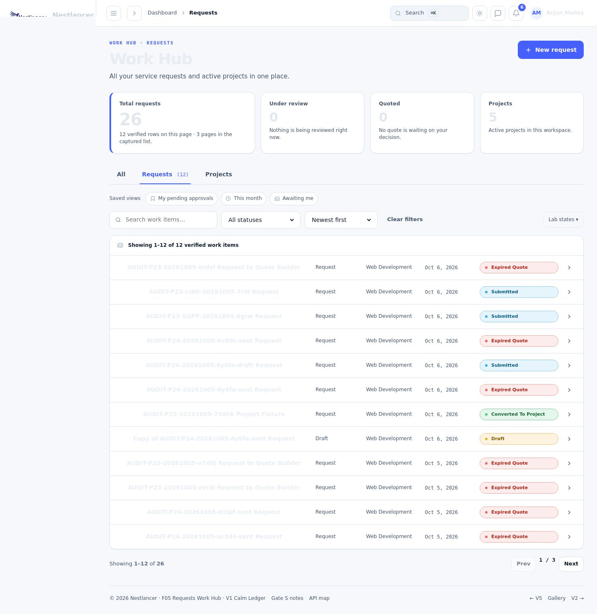
#2 · V2 · Ops Console — 71.2
Source (unmodified): client-portal-lab/families/F05-requests-work-hub/V2/index.html
· Raw evidence: review-evidence/raw/F05-V2-raw.json
Task clarity (3/4): Compact KPI corner + a true table (Ref/Title/Type/Category/Date/Status) - the most information-complete first screen; density asks more of first-time clients than V3's verdict.
Usability (3/4): Filter select works; sortable sticky-header table is the family's most capable list tool. Mobile topbar icon buttons shrink to 16px wide.
Visual craft (3/4): Professional ops table, consistent status pills; 'Quick actions' label squeezes/wraps in the mobile topbar.
Responsive (3/4): Only version whose table becomes proper labelled cards at 390px (WORK ITEM/TYPE/CATEGORY/DATE rows) - deliberate adaptation, no horizontal scroll.
Accessibility (2/4): Axe cleanest here (contrast x2) but 16 mobile targets under 24px including 16x34 icon buttons (menu, density, theme).
Integrity (3/4): Frozen content and counts intact; saved-views select and state toggles are the only lab-ism additions.
Interaction / task results (V2)
| Task | Result |
|---|---|
| T1_first_screen | H1='Work Hub'; see desktop/mobile top screenshots |
| T2_keyboard | 12/12 stops focus-styled, 12/12 in viewport |
| T3_core_desktop | pass via select "Draft" |
| T3_core_mobile | pass via select "Draft" |
| T4_theme | toggle: pass (dark false->true); dark capture applied=True |
| T5_demo_honesty | data-demo click produced no visible toast in probe |
| T6_mobile | h-scroll mobile=0; nav probe opened=True btnW=16; tap<24px=16 |
| T7_axe | desktop: color-contrast x2; dark: color-contrast x3 |
Issues (3)
- minor
F05-V2-I1axe desktop: color-contrast x2 (a[aria-current="page"], i) Fix any of the following: Element has insufficient color contrast of 4.33 (foreground color: #465fff, background color: (axe-core 4.10.2 desktop) - minor
F05-V2-I2axe dark: color-contrast x3 (a[aria-current="page"], .console-head > .btn-p) Fix any of the following: Element has insufficient color contrast of 3.94 (foreground color: #5b7bff, background color: (axe-core 4.10.2 dark) - minor
F05-V2-I316 mobile tap targets under 24px, e.g. [{'text': 'Open navigation menu', 'w': 16, 'h': 34}, {'text': 'Toggle compact density', 'w': 16, 'h': 34}, {'text': 'Switch to dark mode', 'w': 16, 'h': 34}] (raw tapTargetsMobile)

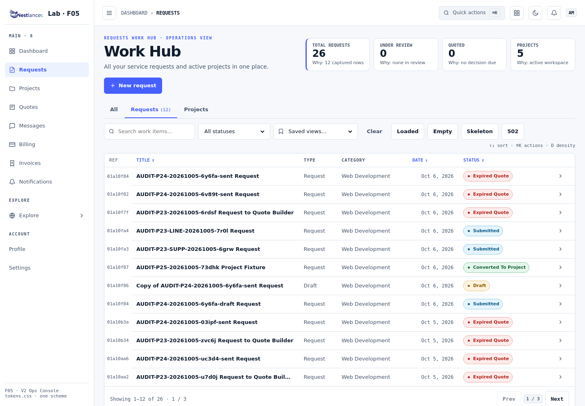

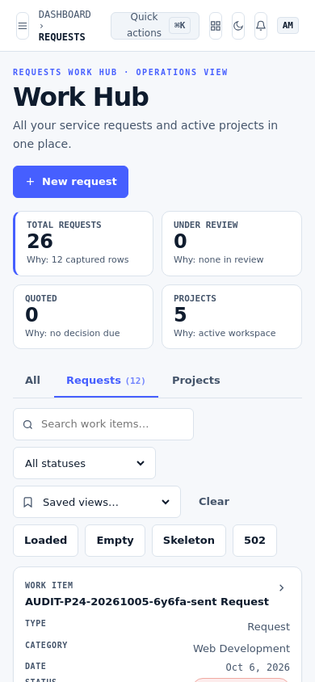

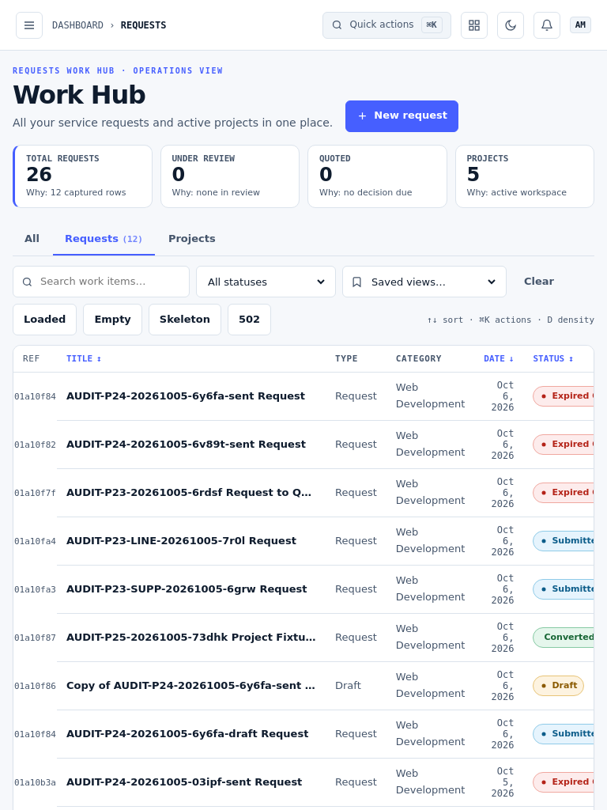

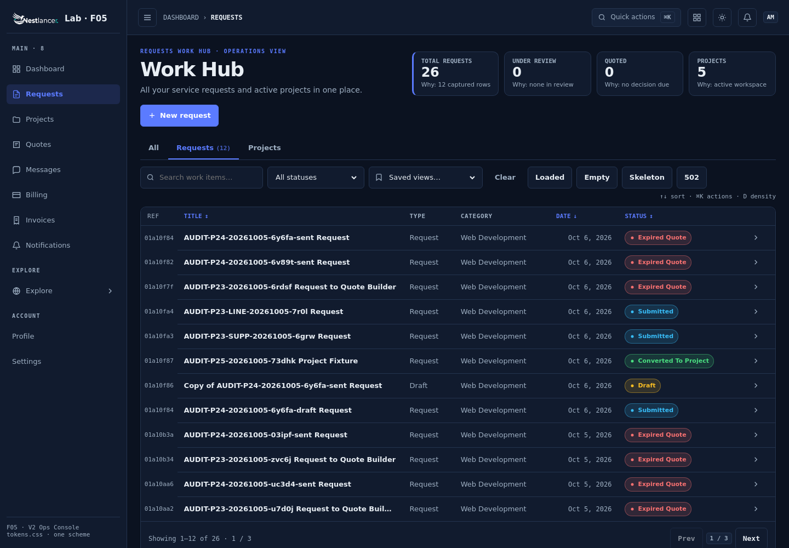

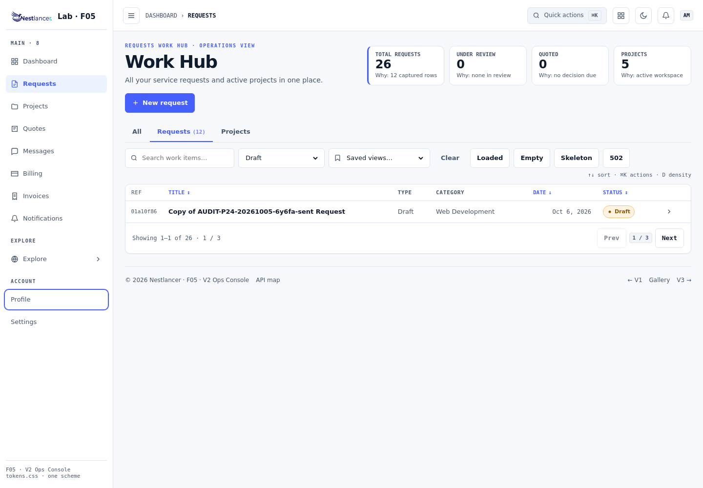

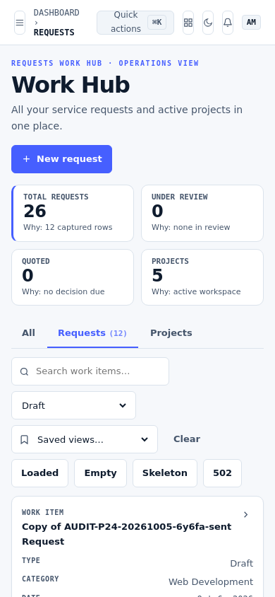

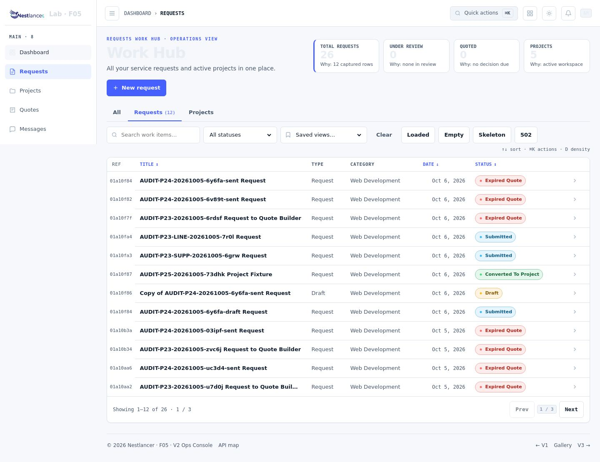
#1 · V3 · Attention Queue — 75.0
Source (unmodified): client-portal-lab/families/F05-requests-work-hub/V3/index.html
· Raw evidence: review-evidence/raw/F05-V3-raw.json
Task clarity (4/4): Verdict hero answers 'what needs me?' instantly - '7 quote(s) expired and 3 requests are submitted' with a Review next CTA - plus a plain-language What happens next lifecycle. Best first-screen guidance in the family.
Usability (3/4): Filter works; attention cards put expired/submitted/draft items one tap away. Filtered live region still read 'of 26 - page 1/3' after filtering to 1 item, a small pagination inconsistency.
Visual craft (3/4): Confident hero + cards; the verdict's 'quote(s)' machine-plural and dense footer links slightly roughen the finish.
Responsive (3/4): Verdict and lifecycle stack cleanly at 390px, zero horizontal scroll, actions visible in first screen.
Accessibility (2/4): Axe aria-allowed-attr x12 (critical rule - ARIA attributes on elements that don't allow them, likely the attention rows) plus contrast x3/x5 - a real AT risk despite good focus behaviour.
Integrity (2/4): Client-visible spec leak: 'Lifecycle from UpdateRequestStatusDto.status (8 states)' names a backend DTO in the UI. Counts/content otherwise frozen-true.
Interaction / task results (V3)
| Task | Result |
|---|---|
| T1_first_screen | H1='Work Hub'; see desktop/mobile top screenshots |
| T2_keyboard | 12/12 stops focus-styled, 12/12 in viewport |
| T3_core_desktop | pass via select "Draft" |
| T3_core_mobile | pass via select "Draft" |
| T4_theme | toggle: pass (dark false->true); dark capture applied=True |
| T5_demo_honesty | honest feedback shown: Showing 1–12 of 26 · page 1 / 3 |
| T6_mobile | h-scroll mobile=0; nav probe opened=True btnW=27; tap<24px=5 |
| T7_axe | desktop: aria-allowed-attr x12, color-contrast x3; dark: aria-allowed-attr x12, color-contrast x5 |
Issues (6)
- major
F05-V3-I1axe desktop: aria-allowed-attr x12 (div[data-status="Expired Quote"][data-prio="1"][data-date="2026-10-06"]:nth-child(2), div[data-status="Expired Quote"][data-prio="1"][data-date="2026-10-06"]:nth-child(3)) Fix all of the following: ARIA attribute is not allowed: aria-pressed="false" (axe-core 4.10.2 desktop) - minor
F05-V3-I2axe desktop: color-contrast x3 (a[aria-current="page"], button[data-prio="attention"]) Fix any of the following: Element has insufficient color contrast of 4.33 (foreground color: #465fff, background color: (axe-core 4.10.2 desktop) - major
F05-V3-I3axe dark: aria-allowed-attr x12 (div[data-status="Expired Quote"][data-prio="1"][data-date="2026-10-06"]:nth-child(2), div[data-status="Expired Quote"][data-prio="1"][data-date="2026-10-06"]:nth-child(3)) Fix all of the following: ARIA attribute is not allowed: aria-pressed="false" (axe-core 4.10.2 dark) - minor
F05-V3-I4axe dark: color-contrast x5 (a[aria-current="page"], div:nth-child(1) > .btn-p) Fix any of the following: Element has insufficient color contrast of 3.94 (foreground color: #5b7bff, background color: (axe-core 4.10.2 dark) - minor
F05-V3-I55 mobile tap targets under 24px, e.g. [{'text': 'AUDIT-P23-LINE-20261005-7r0l Reques', 'w': 318, 'h': 22}, {'text': 'Report study', 'w': 77, 'h': 19}, {'text': '← V2', 'w': 30, 'h': 19}] (raw tapTargetsMobile) - minor
F05-V3-I6Backend DTO name exposed in client copy (UpdateRequestStatusDto) (mobile board)

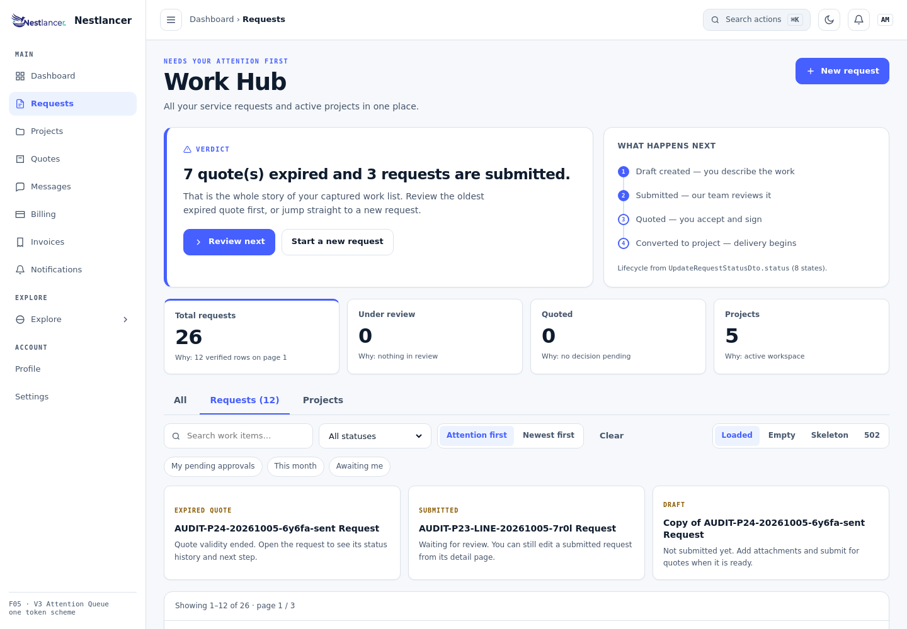

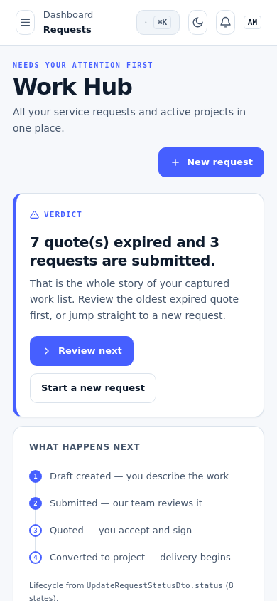

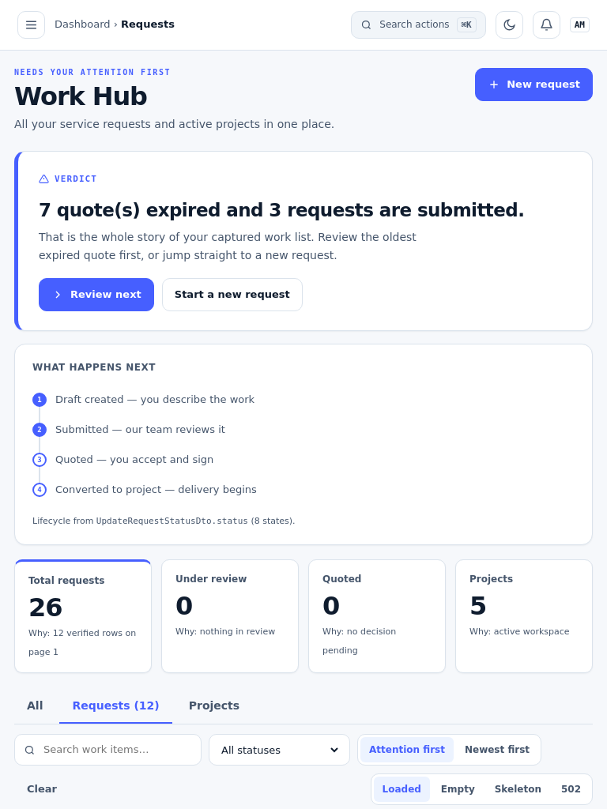

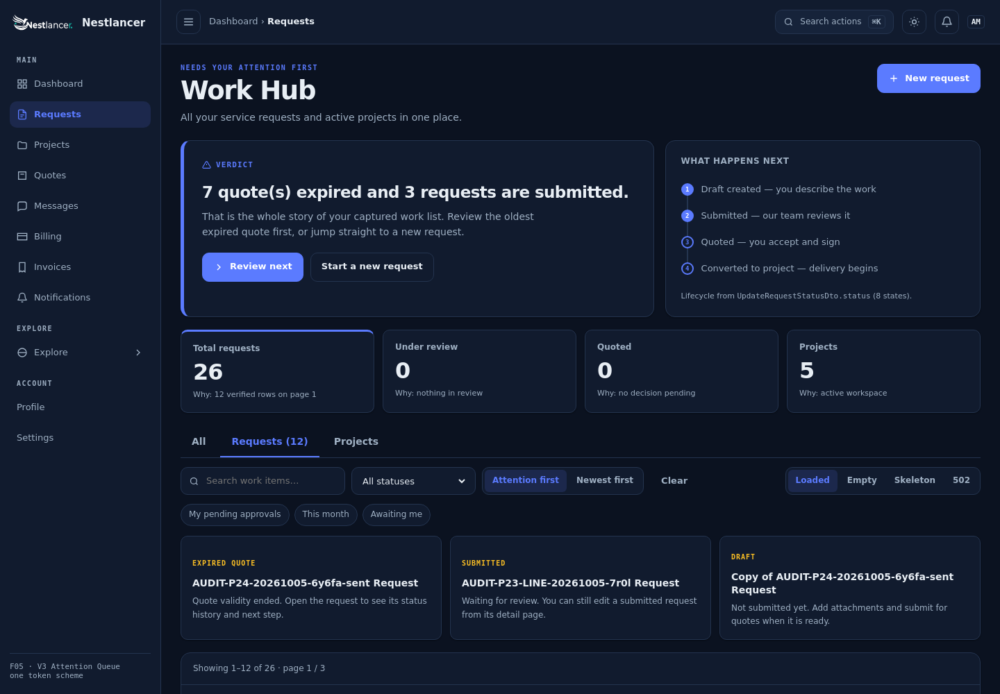

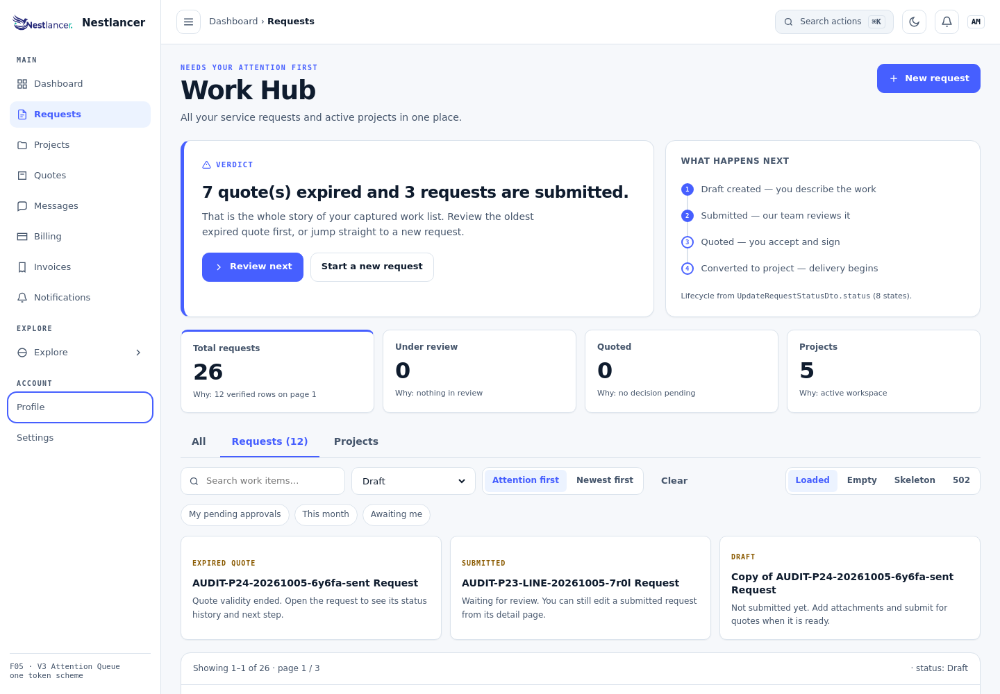


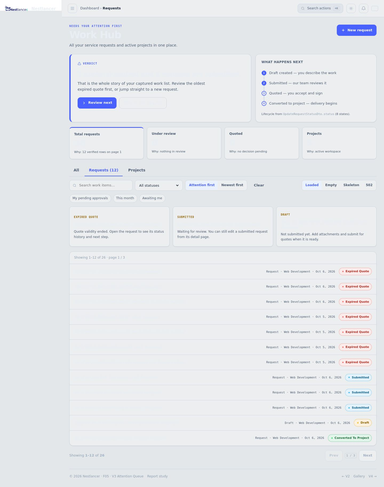
#5 · V4 · Chapter Tabs — 50.0
Source (unmodified): client-portal-lab/families/F05-requests-work-hub/V4/index.html
· Raw evidence: review-evidence/raw/F05-V4-raw.json
Task clarity (2/4): Work is reframed as story chapters ('Chapter 1 - Expired quotes'), a metaphor the client must decode before scanning; the desktop chapter rail also crowds the list it introduces.
Usability (2/4): Filter/search work, but scroll-spy chapter jumping adds a second navigation model on top of tabs+filters for a 12-row captured list - notable friction for the core browse task.
Visual craft (2/4): KPI strip collapses to bare numbers, the chapter rail truncates labels, and the first screen feels cropped rather than composed at both sizes.
Responsive (2/4): No page h-scroll, but mobile chapter tabs clip mid-label ('Chapter 2 - In revi...') and the list starts well below the fold.
Accessibility (2/4): Widest light-mode contrast exposure in family (x6) plus clipped tab labels; focus styling otherwise consistent.
Integrity (2/4): Content is present and counts honest, but narrative 'story/chapter' framing and visible lab state toggles blur the product voice.
Interaction / task results (V4)
| Task | Result |
|---|---|
| T1_first_screen | H1='Work Hub'; see desktop/mobile top screenshots |
| T2_keyboard | 12/12 stops focus-styled, 12/12 in viewport |
| T3_core_desktop | pass via select "Draft" |
| T3_core_mobile | pass via select "Draft" |
| T4_theme | toggle: pass (dark false->true); dark capture applied=True |
| T5_demo_honesty | data-demo click produced no visible toast in probe |
| T6_mobile | h-scroll mobile=0; nav probe opened=True btnW=26; tap<24px=7 |
| T7_axe | desktop: color-contrast x6; dark: color-contrast x5 |
Issues (3)
- minor
F05-V4-I1axe desktop: color-contrast x6 (a[aria-current="page"], button[data-state="populated"]) Fix any of the following: Element has insufficient color contrast of 4.33 (foreground color: #465fff, background color: (axe-core 4.10.2 desktop) - minor
F05-V4-I2axe dark: color-contrast x5 (a[aria-current="page"], .head > .btn-p.btn) Fix any of the following: Element has insufficient color contrast of 3.94 (foreground color: #5b7bff, background color: (axe-core 4.10.2 dark) - minor
F05-V4-I37 mobile tap targets under 24px, e.g. [{'text': 'AUDIT-P24-20261005-6y6fa-sent Reque', 'w': 326, 'h': 22}, {'text': 'AUDIT-P24-20261005-03ipf-sent Reque', 'w': 326, 'h': 22}, {'text': 'AUDIT-P23-LINE-20261005-7r0l Reques', 'w': 326, 'h': 22}] (raw tapTargetsMobile)

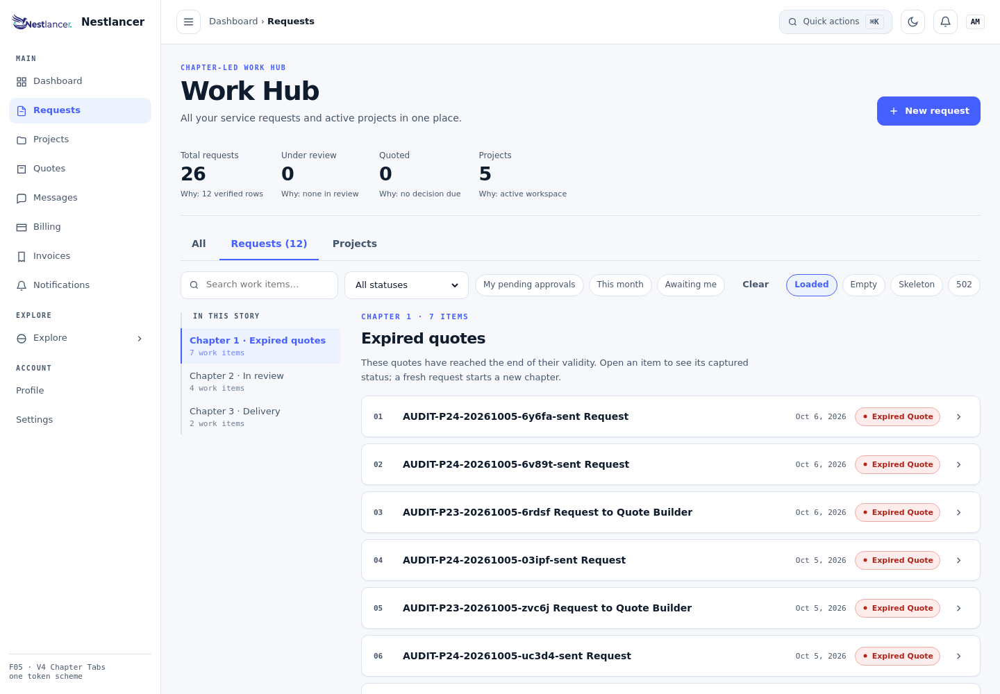

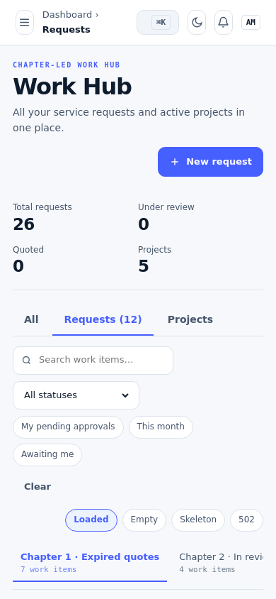

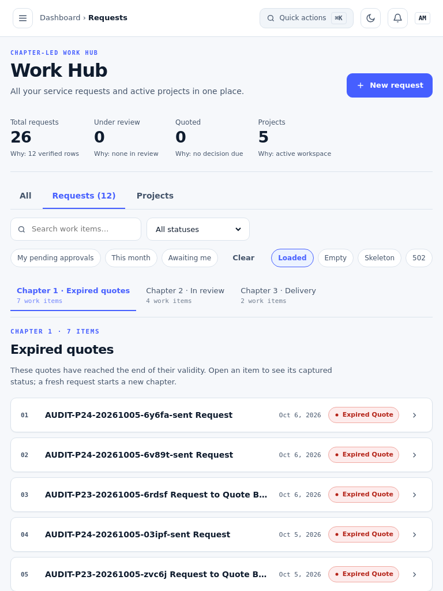

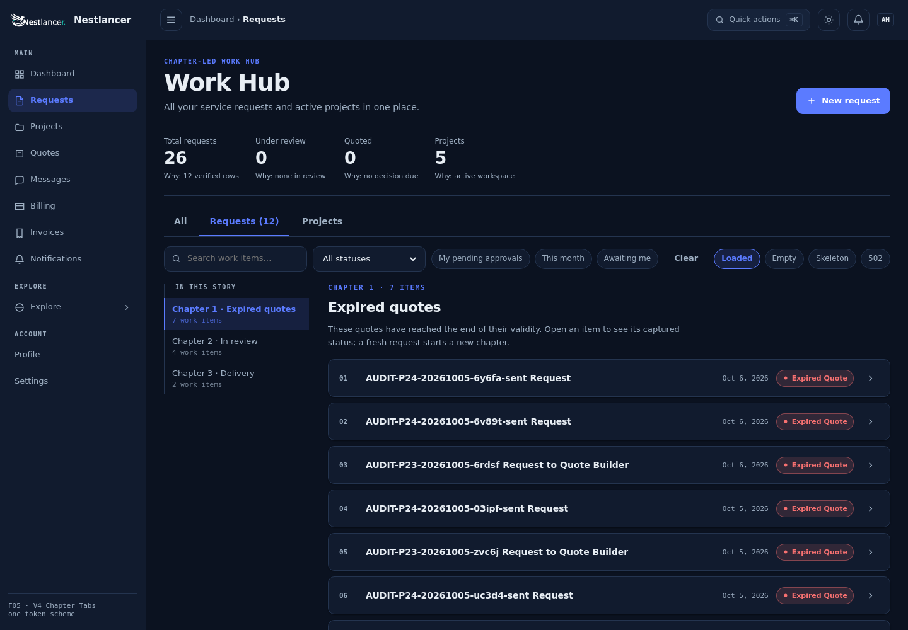

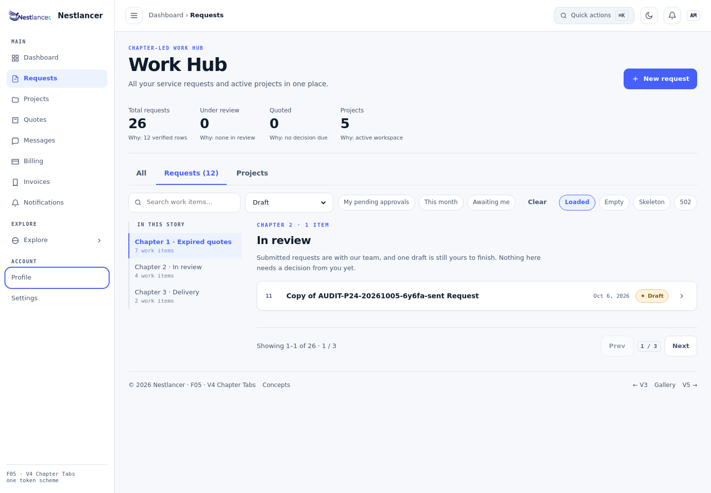

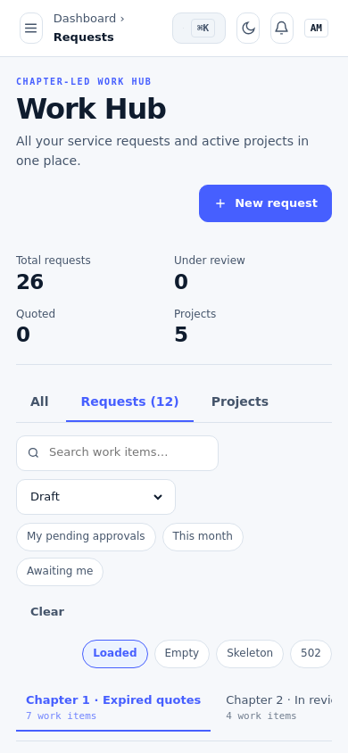

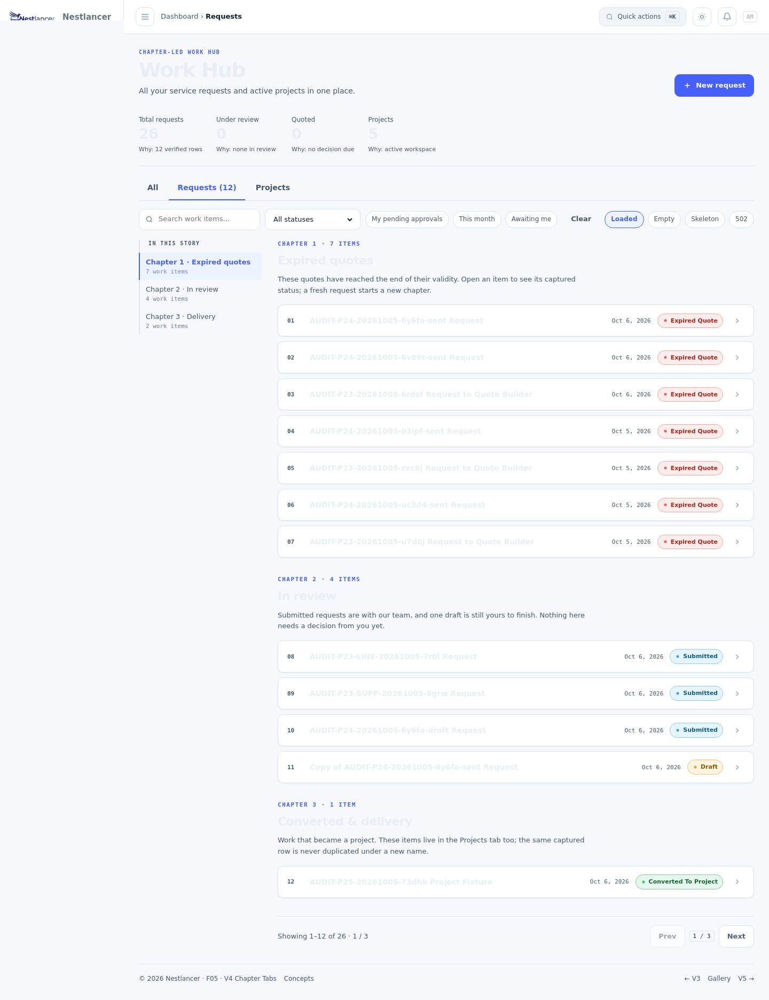
#4 · V5 · Status Lanes — 58.8
Source (unmodified): client-portal-lab/families/F05-requests-work-hub/V5/index.html
· Raw evidence: review-evidence/raw/F05-V5-raw.json
Task clarity (3/4): Kanban lanes (Expired Quote/Submitted/Draft/Converted to project) communicate pipeline shape at a glance on desktop; individual cards are text-dense and small.
Usability (2/4): Filter works, but lanes are read-only and each card's Open link is 19px high; claimed full keyboard lane navigation was not separately exercised in this run.
Visual craft (2/4): Lane board is orderly but card type is the smallest in the family and columns feel cramped at 1440px.
Responsive (2/4): Lanes stack without horizontal scroll, yet the board becomes a very long scroll at 390px and card text stays small - works with notable compromise.
Accessibility (2/4): 18 mobile targets under 24px (every Open link) plus shared 4.33 contrast; lane reading order for AT not verified.
Integrity (3/4): Explicitly and honestly labelled READ-ONLY with the no-status-endpoint constraint respected; frozen rows/counts preserved.
Interaction / task results (V5)
| Task | Result |
|---|---|
| T1_first_screen | H1='Work Hub'; see desktop/mobile top screenshots |
| T2_keyboard | 12/12 stops focus-styled, 12/12 in viewport |
| T3_core_desktop | pass via select "Draft" |
| T3_core_mobile | pass via select "Draft" |
| T4_theme | toggle: pass (dark false->true); dark capture applied=True |
| T5_demo_honesty | data-demo click produced no visible toast in probe |
| T6_mobile | h-scroll mobile=82; nav probe opened=True btnW=26; tap<24px=18 |
| T7_axe | desktop: color-contrast x2; dark: color-contrast x3 |
Issues (4)
- major
F05-V5-I1Horizontal page scroll at 390px (82px); rightmost: {'tag': 'SPAN', 'cls': 'kbd', 'right': 409} (raw overflow_mobile; F05-V5-mobile-light-top.png) - minor
F05-V5-I2axe desktop: color-contrast x2 (a[aria-current="page"], button[data-state="populated"]) Fix any of the following: Element has insufficient color contrast of 4.33 (foreground color: #465fff, background color: (axe-core 4.10.2 desktop) - minor
F05-V5-I3axe dark: color-contrast x3 (a[aria-current="page"], .head > .btn-p.btn) Fix any of the following: Element has insufficient color contrast of 3.94 (foreground color: #5b7bff, background color: (axe-core 4.10.2 dark) - minor
F05-V5-I418 mobile tap targets under 24px, e.g. [{'text': 'Open ↗', 'w': 50, 'h': 19}, {'text': 'Open ↗', 'w': 50, 'h': 19}, {'text': 'Open ↗', 'w': 50, 'h': 19}] (raw tapTargetsMobile)

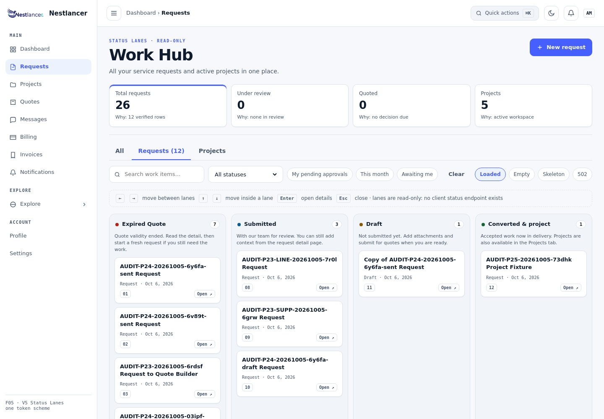

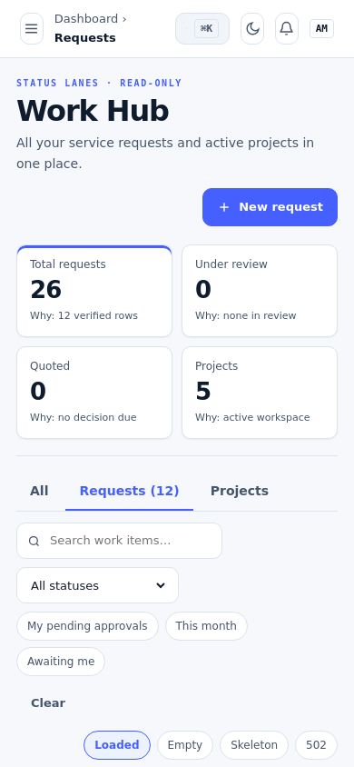

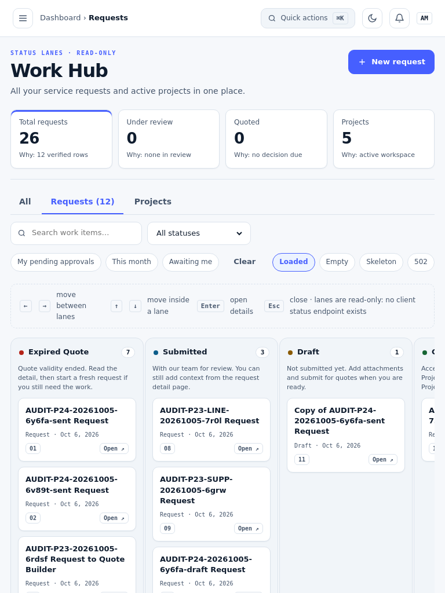

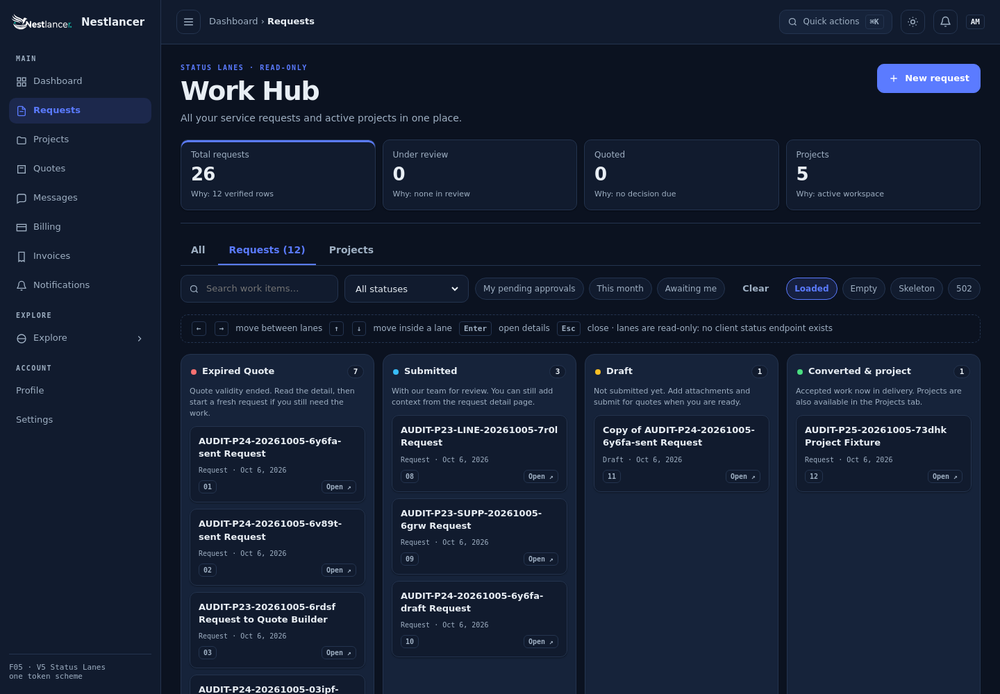

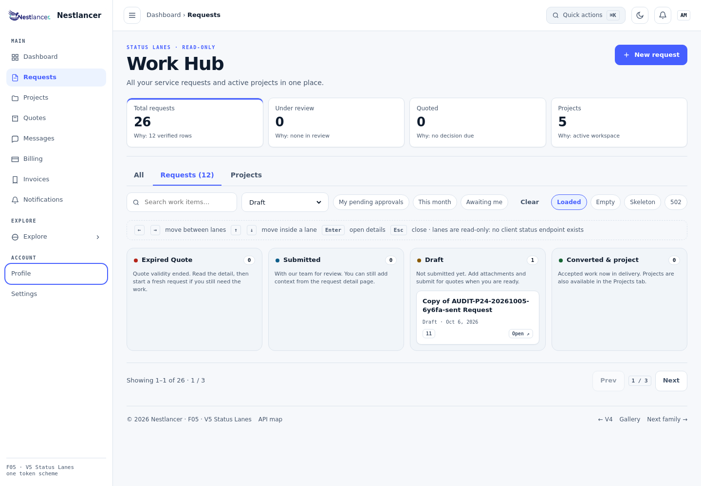

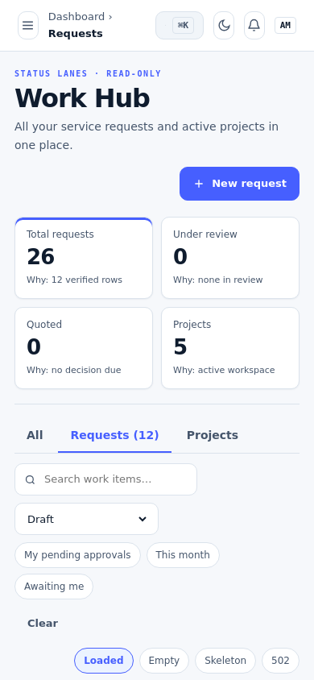

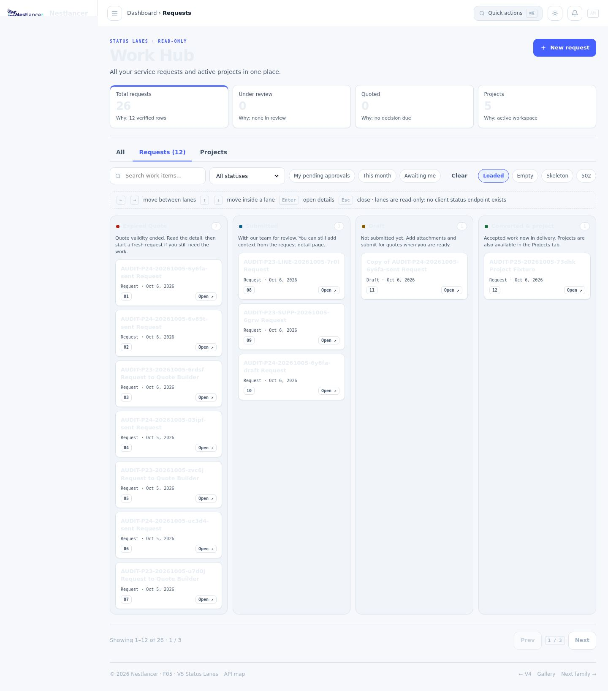
Blind comparison boards
Seeded labels A–E; the screenshots contain in-page version identifiers, so true blinding was incomplete. Mapping (review-evidence/raw/blind-mapping.json): A=V4 · B=V1 · C=V5 · D=V2 · E=V3.
One AI evaluator generated the board and mapping; board notes above were recorded in the session transcript before the mapping file was opened. This is a bias-reduction aid, not true experimental blinding.

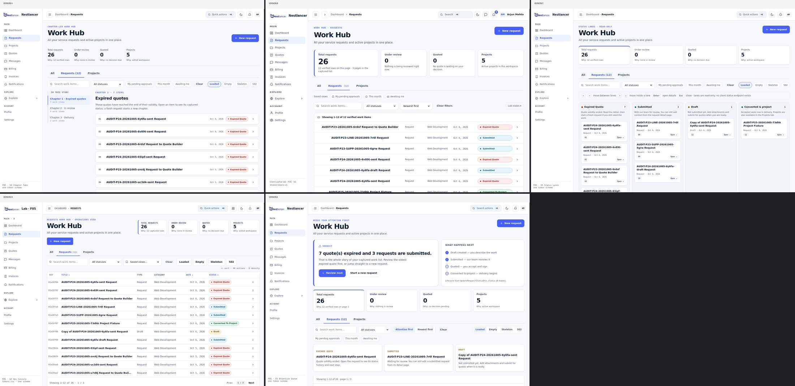

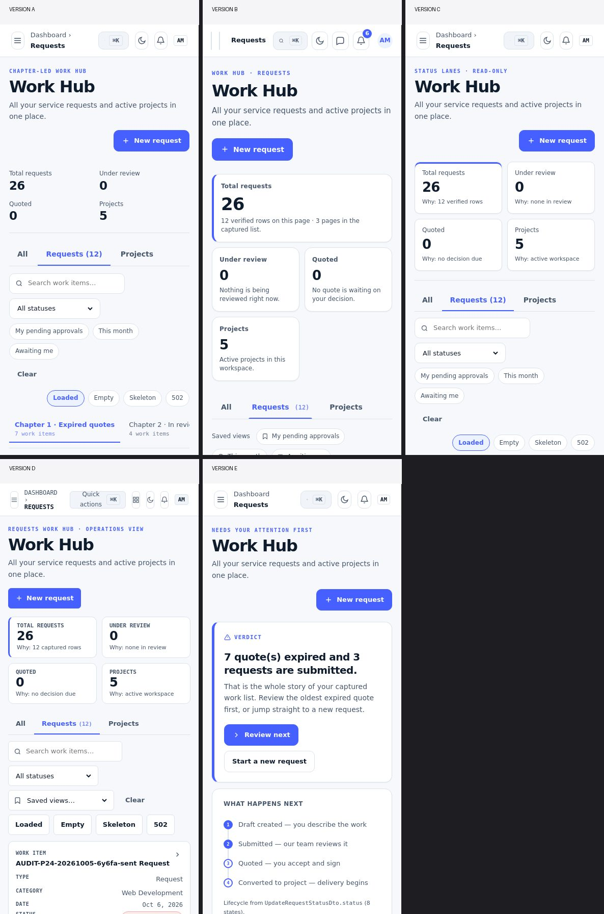
Pairwise consistency check (one evaluator, not votes)
| Pair | Better for family task | Reason |
|---|---|---|
| V1 vs V2 | V2 | Sortable table + mobile cards beat calm ledger whose KPIs bury rows on mobile |
| V1 vs V3 | V3 | Verdict/next-step guidance vs neutral ledger |
| V1 vs V4 | V1 | Direct list vs chapter metaphor |
| V1 vs V5 | V1 | Row targets/list tasks more usable than small lane cards |
| V2 vs V3 | V3 | For clients, attention guidance beats ops density; V2 wins for repeat power use - recorded as evaluator judgment, margin 3.8 |
| V2 vs V4 | V2 | Table efficiency vs chapter friction |
| V2 vs V5 | V2 | Sortable table + card fallback vs read-only lanes |
| V3 vs V4 | V3 | Clear verdict vs metaphor |
| V3 vs V5 | V3 | Next-action clarity + mobile stack vs buried lanes |
| V4 vs V5 | V5 | Status-at-a-glance beats chapter decoding despite small targets |
One evaluator's 10-pair consistency check (S4.2), not human votes; no Bradley-Terry/Elo applied. All 10 agree with the rubric order; the V1-V4 pair prompted the documented V4 task-clarity re-check.
Coverage, limitations, change log
Persona coverage (no votes): Coverage relevance only: shared mobile header/menu defect is most relevant to phone one-handed and motor-access profiles; 4.33:1 contrast to low-vision profiles; V4 missing H1 and V1 inert tab pattern to keyboard/screen-reader profiles; V3 duplicated payment to cognitive-access and first-time profiles; V5 context-thin density to first-time profiles. No persona preferred or voted.
Task script: Generic T1-T7 + family core: set Status filter to Draft and read the live/pagination region (same on desktop+mobile); search input presence/labels recorded; detail-drawer/row-open not forced where it would navigate away.
- First-pass scores assigned from blind boards + raw evidence before reading prior winner claims (still unread).
Environment: Chromium 131.0.6778.33 (HeadlessChrome, Playwright bundled build chromium-1148) · Playwright 1.49.1 (pinned in review-evidence/tooling/package.json)
· axe-core 4.10.2 (pinned) · NOT cross-machine pixel-reproducible: no Docker in sandbox; pinned Playwright/Chromium used consistently for every page in this run.
Full record: review-evidence/review-manifest.json; machine data: review-evidence/scores.json.